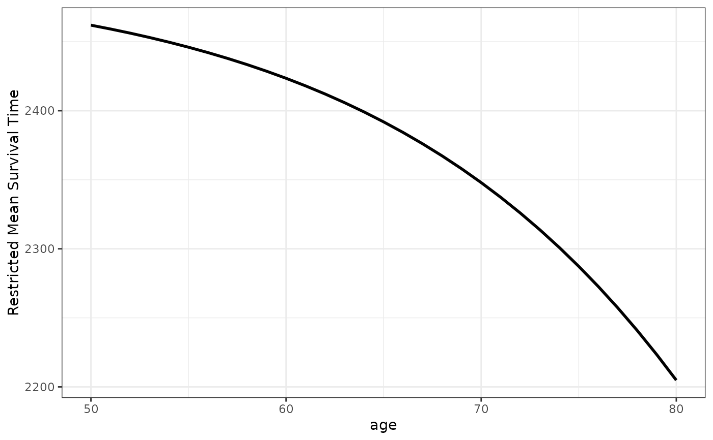
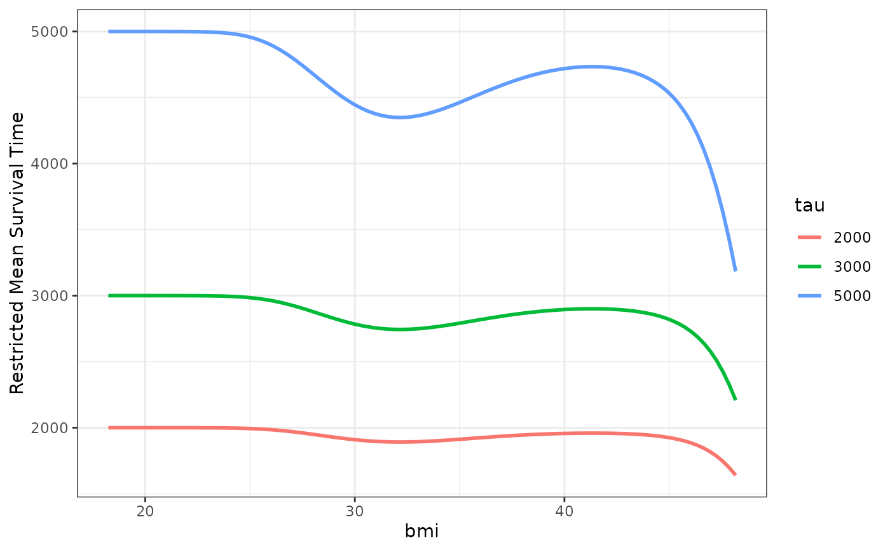

Plot the Effect of a Continuous Variable on the Restricted Mean Survival Time
plot_surv_rmst.RdUsing a previously fit time-to-event model, this function plots the restricted mean survival time (RMST) as a function of a continuous variable.
Usage
plot_surv_rmst(time, status, variable, group=NULL,
data, model, na.action=options()$na.action,
tau, horizon=NULL, custom_colors=NULL,
size=1, linetype="solid", alpha=1, color="black",
xlab=variable, ylab="Restricted Mean Survival Time",
title=NULL, subtitle=NULL,
legend.title=variable, legend.position="right",
gg_theme=ggplot2::theme_bw(),
facet_args=list(), ...)Arguments
- time
A single character string specifying the time-to-event variable. Needs to be a valid column name of a variable in
data.- status
A single character string specifying the status variable, indicating if a person has experienced an event or not. Needs to be a valid column name of a variable in
data.- variable
A single character string specifying the continuous variable of interest, for which the survival curves should be estimated. This variable has to be contained in the
data.framethat is supplied to thedataargument.- group
An optional single character string specifying a factor variable in
data. When used, the plot is created conditional on this factor variable, meaning that a facetted plot is produced with one facet for each level of the factor variable. Seecurve_contfor a detailed description of the estimation strategy. Set toNULL(default) to use no grouping variable.- data
A
data.framecontaining all required variables.- model
A model describing the time-to-event process (such as an
coxphmodel). Needs to includevariableas an independent variable. It also has to have an associatedpredictRiskmethod. See?predictRiskfor more details.- na.action
How missing values should be handled. Can be one of:
na.fail,na.omit,na.pass,na.excludeor a user-defined custom function. Also accepts strings of the function names. See?na.actionfor more details. By default it uses the na.action which is set in the global options by the respective user.- tau
The point in time to which the RMST should be calculated. Can be a vector of numbers. If multiple values are supplied, one curve is drawn for each of them.
- horizon
A numeric vector containing a range of values of
variablefor which the survival curves should be calculated orNULL(default). IfNULL, the horizon is constructed as a sequence from the lowest to the highest value observed invariablewith 100 equally spaced steps.- custom_colors
An optional character vector of colors to use when there are multiple values in
tau. Ignored iflength(tau)==1, in which case thecolorargument can be used to specify the color of the single line.- size
A single number specifying how thick the lines should be drawn.
- linetype
The linetype of the drawn lines. See documentation of ggplot2 for more details on allowed values.
- alpha
The transparency level of the lines.
- color
The color of the curve if
tauis a single value. If a numeric vector was supplied totau, use thecustom_colorsargument to specify them instead.- xlab
A character string used as the x-axis label of the plot.
- ylab
A character string used as the y-axis label of the plot.
- title
A character string used as the title of the plot.
- subtitle
A character string used as the subtitle of the plot.
- legend.title
A character string used as the legend title of the plot.
- legend.position
Where to put the legend. See
?themefor more details.- gg_theme
A ggplot2 theme which is applied to the plot.
- facet_args
A named list of arguments that are passed to the
facet_wrapfunction call when creating a plot separated by groups. Ignored ifgroup=NULL. Any argument except thefacetsargument of thefacet_wrapfunction can be used. For example, if the user wants to allow free y-scales, this argument could be set tolist(scales="free_y").- ...
Further arguments passed to
curve_cont.
Details
Similar to the plot_surv_at_t and plot_surv_quantiles plots, this function produces a plot of a survival curve summary statistic as a function of a continuous variable. The summary statistic in question is the restricted mean survival time (RMST), which is the area under a survival curve up to a specific point in time tau. It can be interpreted as the mean survival time of the population up to tau.
First, a range of value-specific survival curves are estimated. The RMST is then calculated for each one using step function interpolation. This only works for survival curves, not for CIFs. If the area under the CIF should be used instead, the plot_surv_rmtl function can be used.
An advantage of this method over the plot_surv_at_t and plot_surv_quantiles function is, that it does take the whole survival curve into account, kind of. Although it is the area under it, it is only calculated up to tau which makes the output dependent on the choice of tau. This, again, can result in deceiving plots in some cases. Plots visualizing the entire survival curves such as plot_surv_contour and plot_surv_area might be preferable.
References
Eng, K. H.; Schiller, E. & Morrell, K. On Representing the Prognostic Value of Continuous Gene Expression Biomarkers with the Restricted Mean Survival Curve. In: Oncotarget, 2015, 6, 36308-36318
Robin Denz, Nina Timmesfeld (2023). "Visualizing the (Causal) Effect of a Continuous Variable on a Time-To-Event Outcome". In: Epidemiology 34.5
Examples
library(contsurvplot)
library(riskRegression)
library(survival)
library(ggplot2)
library(splines)
# using data from the survival package
data(nafld, package="survival")
# take a random sample to keep example fast
set.seed(42)
nafld1 <- nafld1[sample(nrow(nafld1), 150), ]
# fit cox-model with age
model <- coxph(Surv(futime, status) ~ age, data=nafld1, x=TRUE)
# plot effect of age on the RMST for ages 50 to 80
plot_surv_rmst(time="futime",
status="status",
variable="age",
data=nafld1,
model=model,
horizon=seq(50, 80, 1),
tau=2500)

# plot RMST for multiple tau values for ages 50 to 80
plot_surv_rmst(time="futime",
status="status",
variable="age",
data=nafld1,
model=model,
horizon=seq(50, 80, 1),
tau=c(2000, 3000, 5000))
## showing non-linear effects
# fit cox-model with bmi modeled using B-Splines,
# adjusting for age and sex
model2 <- coxph(Surv(futime, status) ~ age + male + bs(bmi, df=3),
data=nafld1, x=TRUE)
# plot effect of bmi on survival
plot_surv_rmst(time="futime",
status="status",
variable="bmi",
data=nafld1,
model=model2,
tau=c(2000, 3000, 5000))
